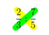

DIVISION DE FRACCIONES
Este método consiste en multiplicar el numerador de la primera fracción por el denominador de la segunda fracción y el resultado colocarlo en el numerador de la fracción fina l. Por otro lado, tenemos que multiplicar el denominador de la primera fracción por el numerador de la segunda fracción y el resultado lo escribimos en el denominador de la fracción final.
Se llama método de la cruz por el siguiente esquema:
